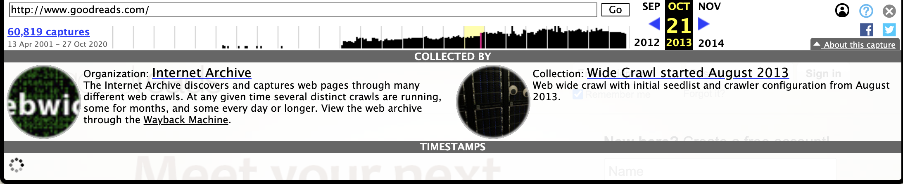
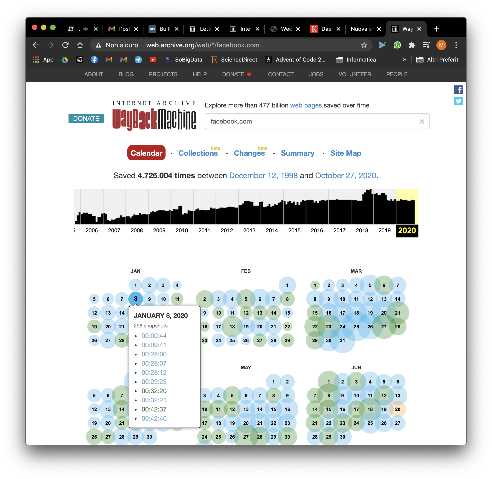

Web Archive
Web Archive hosts a huge collection of any possible digital material.
Content
Videogames, magazines, music and videos are only a small fragment of the content of this archive. If a media was born digital or it can be digitalized, probably in Internet Archive you can find some similar material.
Homepage
At the top of the homepage appears the most important archive of the site: the Wayback Machine, that we discuss in the dedicated section. Then in the main are listed all the other collections, with the possibility to search through many different filters.
Metadata
Many metadata are used to classify the content:
- type of media
- web
- text
- movies
- audio
- tv
- software
- image
- etree
- collections
- title
- creator
- description
- collection
- mediatype
- date
Other statistics are tracked, such as the number of visualizations or downloads.
Collections
Each collection can contain further collections or other (also mixed) types of media.
Additional search filters are available in the left of the screen. These filters depend on the content of the collection and are useful to have an idea of the materials contained in it.
Wayback Machine
Wayback Machine allows to visit existing or expired websites at different timesteps of their existence. A very useful timeline shows the quantity of captures where made for a particular period.
It's also possible to see a calendar with the quantity of data for each day.
Comment
The mission of Internet Archive is very important because digital material could be very easy to forget and to lose. In addition, this website is an open source of material democrately available to all users.
My favorite collections are: